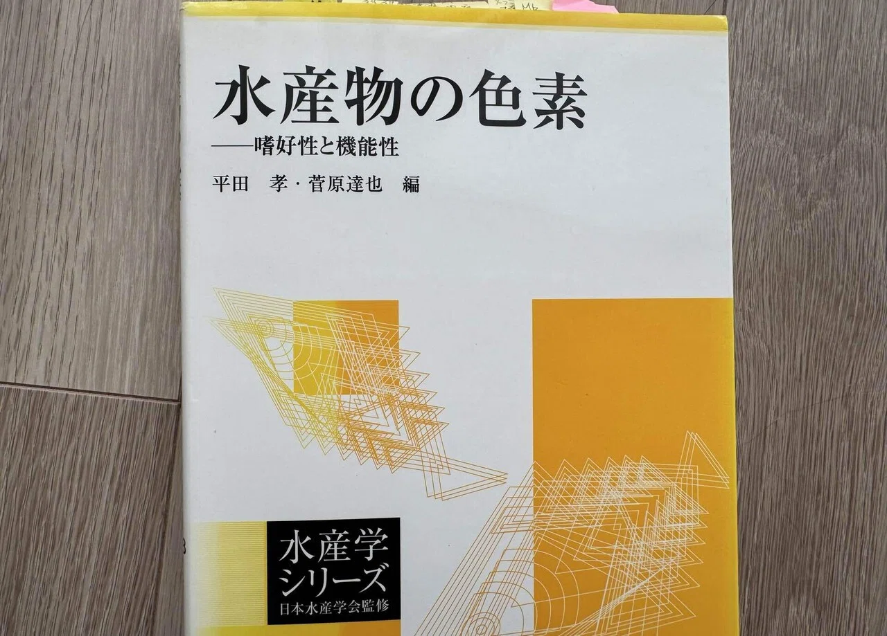

【海水魚の餌】第４回：
生餌のメリットⅡ ー「タウリン」と海産色素の機能性
Published: 2026.02.13
海水魚の餌について
第１回「人工飼料の限界を探る」
第２回「魚のための餌とは何か？」をご紹介してきました。
そして今回は第３回 生餌のメリットⅠの続きです。
海洋生物を素材とした「海水魚の餌」としての“生餌（冷凍餌・活餌を含む。以下「生餌」と表記します）”が持つメリットについて、今回も引き続き、具体的に掘り下げていきたいと思います。
ここで「生餌・冷凍餌・活餌」をあえて一括りに扱うのは、前回と同様、“素材そのものが本来もつ栄養性や機能性”に焦点を当てているためです。本質的には、いずれも魚たちにとって「非加熱・未乾燥の自然由来の“生”の食材だからこそ」であり、その意味で共通する性質を持っています。
今から約10年前、私は人工飼料中心の給餌から“生餌メイン”のスタイルへと切り替えました。いろいろと悩み、学び、納得したうえで、8年前からは現在の「CAS冷凍餌料中心」のスタイルに落ち着いています。
十分な実績も積んだと感じており、その上で筆を執っています
今回も文献の引用部分では、なるべくエビデンスベースで主観を排しつつ構成していきます。そのぶん文章がやや堅く感じられるかもしれませんが、ご了承ください。
それでは前回の続きを書いて行きます。
４．タウリン―神経・代謝・肝臓サポートのキープレイヤー
生餌のもうひとつの大きなメリットは、海水魚にとって不可欠なアミノ酸様物質「タウリン」が豊富に含まれていることです。
タウリンといえば、人間では疲労回復や肝機能の向上、コレステロール・中性脂肪の低下、心臓や血圧のサポート、糖尿病予防、視力の維持など、実に多くの効果が知られています。栄養ドリンクや点眼薬にも配合されており、すでに馴染みのある成分です。
一方、魚類におけるタウリンの働きは、神経伝達、胆汁酸の代謝、浸透圧の調節、網膜の形成、絶食耐性の維持など、生命維持に深く関わっています。（恒星社厚生閣『養殖の餌と水』）
特に重要なのは、海水魚ではタウリンを魚自身で合成できない、あるいは成長や代謝に追いつく量を合成できない魚種が多いという点です。（恒星社厚生閣『養殖の餌と水』）こうした魚たちは、タウリンを豊富に含む餌生物（軟体動物、魚卵、甲殻類など）から外部摂取することを前提に代謝システムが構築されています。
また、魚種や成長過程によって、必要とされるタウリンの量は大きく異なることが知られており、特に幼魚や稚魚期はタウリンの必要量が高く、十分な供給がないと成長や摂餌行動に悪影響を及ぼす可能性があります。（恒星社厚生閣『養殖の餌と水』）。
人工餌の原料である魚粉にもタウリンは含まれていますが、魚粉製造の煮熟・圧搾工程で水溶性のタウリンは煮汁に流出し、多くが失われてしまいます。
また、第１回「人工飼料の限界を探る」でも触れたとおり、植物性原料にはまったく含まれないため、植物性原料の含有量によって、人工飼料ではタウリンが不足しやすく、成長や健康に影響が出る可能性があります。
タウリンが不足すると、肝機能障害（緑肝症）、遊泳異常、成長不良、食欲不振、摂餌行動の異常、体色の黒ずみなど、さまざまな障害が引き起こされることが報告されています（恒星社厚生閣『養殖の餌と水』）。
ワムシ（ロティファー）はタウリン含量が低いため、海水魚のブリーディングをする際の初期餌料として使用する際にはタウリンの強化が必要とされています。つまり、餌中のタウリン量は、魚種やライフステージによって「最適な成分設計」が求められる要素なのです。
なお、同様に一般的な初期餌料として知られるアルテミア（ブラインシュリンプ）についても、近年の水産研究ではタウリン含有量が稚魚の成長要求を満たすには十分でないとされ、飼育時にはタウリン強化が必要であることが指摘されています。
海水魚を健全に育成するうえで非常に重要なタウリンですが、その重要性が明らかになったのは比較的近年のことで、養殖現場で飼料に添加される合成タウリンが飼養添加物として正式に指定されたのは2009年と、意外にも遅い時期でした（恒星社厚生閣『養殖の餌と水』）。
現在の水産養殖ではタウリン強化アルテミアやタウリン添加飼料は標準化されており、それらが稚魚や幼魚の生残率・成長・視覚発達を支える要素として多数の研究で確認されています。
しかし、これほど海水魚に重要な成分であるにもかかわらず、マリンアクアリウムの世界では──人工飼料やアミノ酸添加剤の原料表示やキャッチコピーに『タウリン添加！！』と書かれているのを、私は見かけたことがありません。
なぜでしょうか？
それは日本の法律と関係しています。
合成タウリンは、厚生労働省が定める薬機法上、基本的に「医薬品成分」として扱われており、原則として医薬品や指定医薬部外品などにしか添加が認められていません。
ところが、第1回人工餌の限界でもご紹介しましたが、日本の法律では観賞魚の人工餌は雑貨扱いになるため合成タウリンを混ぜて国内で製造・販売する事が非常に難しいという事情があります。
つまりタウリンの要求量の高い魚種や幼魚に必要なタウリンが、人工餌では十分な量を確保できない可能性があります。
その点でも、タウリン豊富な生餌を海水魚の給餌に取り入れる事が大きな利点といえるでしょう。
５．海産色素の“機能性”──発色だけじゃなさそう？
生餌のメリットとして、見逃せないのが“天然色素”の存在です。
近年、自然界に存在する色素成分が、健康や生理機能に寄与することが注目され、主に人を対象とした研究が盛んに行われています。

水産物に含まれる色素は極めて多様ですが、それらが各生物の生存戦略においてどのような機能を果たしているのかについては、まだ多くが未解明のままです（恒星社厚生閣『水産物の色素』）
その中でも、最も研究が進んでいるのがアスタキサンチン（カロテノイドの一種）です。
人に対する機能性としては、抗酸化作用（ビタミンＣの6000倍）、目の疲労軽減、肌の保護、紫外線ダメージの軽減、脂質酸化の抑制、認知機能の改善、抗肥満効果などが報告され、美容・健康分野で注目されています。
一方、魚にとってはどうでしょうか。
1960年代、マダイの養殖が始まった当初、養殖マダイがクロダイのような灰色の体色になってしまう問題が起こりました。
そこでアスタキサンチンを含む餌を与えたところ、天然マダイのようなピンク色が再現されたのです。
飼料中のアスタキサンチン濃度を調整することで、体色が明確に変化することは、複数の研究で確認されています（Fujita, 1983 他）。
現在ではアスタキサンチンは、魚の「赤・オレンジ・黄色・ピンク」などの発色に重要な色素として広く知られています。
最近の研究では、アスタキサンチンの摂取量だけでなく、その“形態の違い”が色素沈着に影響を与えることが分かってきました。
とくに、天然アスタキサンチン（エステル結合体）の方が、合成アスタキサンチン（フリー体）よりも吸収効率や沈着効率が高いことが報告されています。
生餌（甲殻類、魚卵など）に含まれるのは、この“天然型エステル体”であり、より自然な形で魚の体内に取り込まれ、人工添加では再現できない発色が得られる可能性があります。
実際、ニジマスにナンキョクオキアミ由来のアスタキサンチン（ジエステル型）を添加した試験では、合成型よりも高い発色効果が確認されており、アスタキサンチンの“形態”による違いが報告されています。（Choubert, 2006）。
さらに、2024年のベニザケを対象とした研究でも、合成アスタキサンチンを添加した人工飼料より、ナンキョクオキアミ（天然由来のアスタキサンチンを豊富に含有）を給餌した方が、筋肉への色素沈着が良好で、身の色調も天然物に近かったことが報告されています（J-STAGE、農水省報告書、2024年）。
また、人工飼料製造時の高熱や開封後の光・酸素により、天然の「オールトランス型（直線状）」色素は、「シス型（折れ曲がり状）」へと変性・劣化してしまう問題も指摘されています（Zhang et al., 2018）。
シス型へ異性化すると色素本来の光学特性（吸光特性）が低下するため、魚の鮮やかな体色を引き出す力も弱まると考えられています。
さらにシス型は構造的に不安定で酸化分解されやすく、開封後も色素本来の発色能力を徐々に失っていきます。
この結果は、観賞魚においても、非加熱の生餌由来の色素が、人工飼料に添加された合成色素とは異なる発色効果を生む可能性を示唆しています。
つまり、魚の体色にはそれぞれ意味があり、天然の色彩が健康のバロメーターだとしたら、水槽内で色あせていく魚は、何かが欠けているというサインなのでは？と私は考えています。
たとえば、ハナダイなどの鮮やかな赤色が褪せてきた場合、非加熱の天然アスタキサンチンの不足が原因かもしれません。
よく知られているアスタキサンチンは、その一例にすぎません。
海産生物の世界には、カロテノイド、フラボノイド、ブチリジン系色素、メラニン、インドール系色素、キノン系色素、オモクローム、テトラピロール系など、実に多種多様な天然色素が存在しています。
これらの多くは、現在も「人間にとっての機能性食品成分」として研究が進められている段階であり、魚にとっての機能性については、まだ十分に解明されていないのが現状です。
しかし一方で、こうした天然色素の中には、単なる“発色の材料”にとどまらず、一部の魚類に対して抗酸化作用や免疫調節作用を持つことが報告されており（Amar et al., 2004）、生理的に重要な栄養素としても機能している可能性があります。
今後の研究によって、こうした機能がさらに明らかになっていくことが期待されます。
ですので、こうした“天然色素の複合的な摂取”が、魚の体色や健康の維持にもつながっている可能性は高いと私は考えています。
一方で、これら天然色素は熱・乾燥・酸化に弱いものも多く、生餌を通じて摂取する方が、より自然で理にかなっているとも言えるんではないでしょうか。
生餌とはちょっとはずれますが、私は魚たちのおやつに海苔を与えています。
上記の観点から敢えて焼き海苔ではなく「非加熱の板海苔（乾海苔）」を選んでいます。焼くと失われる海産色素（フィコエリスリン：赤色、フィコシアニン：青色）が含まれているからです。
６．おまけ ─次世代につなぐ
前回・今回で紹介してきた生餌のメリットをまとめておまけコラムをひとつ
──消化性、DHA/EPA、タウリン、天然色素（アスタキサンチン）──は、実は魚の「健康」だけでなく、「命をつなぐ力」である卵の質や精子にも深く関与していることが、近年の研究で明らかになってきています。
つまり、生餌という“自然な素材”には、繁殖成功を支える鍵となる栄養素が、複合的に含まれているのです。
■ 科学が示す、栄養素と卵質・精子の質の関係
親魚の栄養状態が向上すると、卵や精子そのものの質も高まることが、さまざまな研究で示唆されています。
具体的に上げると
- ① 消化が良い栄養吸収率UP → 良質なタンパク質・必須アミノ酸・微量栄養素がしっかり届く（卵形成・精子形成の素材）
- ② DHA・EPA → 胚・視覚・神経発達／奇形防止／孵化率の向上／精子膜の流動性維持・運動性サポート
- ③ タウリン→ 卵巣の代謝サポート／精巣機能・精子運動性の改善／受精率・初期生残率UP
- ④ アスタキサンチン→ 抗酸化作用で胚を守る／卵黄に蓄積／孵化率UP／精子DNAの酸化損傷を防ぐ可能性も
特に海産魚では、DHAやタウリンが“卵質”や“精子運動性”に影響する例が数多く報告されています。
ここまで紹介してきた栄養素は、魚たちの健康を支えると同時に、“質の良い卵”“良い精子”を育むためにも欠かせない要素なんですね。
２０１４年にMACNAで発表された「マスクドエンゼルの繁殖成功」の嬉しいニュース。ここにも良質な生餌（冷凍餌）の存在がありました。
つまり、生餌を中心とした給餌スタイルは、親魚の健康だけでなく、魚たちが“次世代に命をつなぐ”力＝卵質・精子の質にも大きく寄与している可能性があると私は考えています。
親魚の栄養が繁殖成績に与える影響については、Izquierdoら（2001）のレビュー論文に詳しくまとめられており、現在も多くの研究の基礎文献とされています。
詳しく知りたい方は、『魚類 卵質』などでGoogle Scholarを検索すれば、関連文献は日本語だけでも1万件以上ヒットします。
興味のあれば、ぜひ“卵質の沼”へ・・・レッツ検索！（笑）
さて次回も「生餌のメリット」の続きを書く予定です。
これまではエビデンスベースの話が多かったですが、次回は私の仮説（夢想？？ｗ）もかなり織り込む内容になると思います。
他のコラムも読んでみませんか？
＼ 記事が良かったらポチッと！ ／
💬 感想・コメントはこちらから
- © Emi - Scientific Aquarium
- Design: HTML5 UP